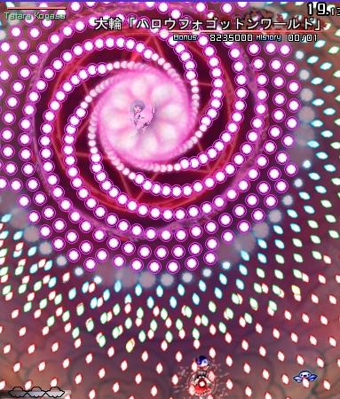
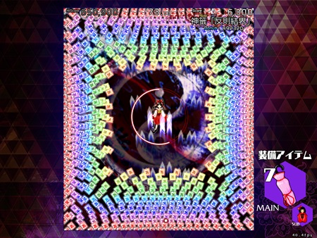

Because the official art isn't a strong point,
fanartists have stylistic free-reign with their art.Official art for Reimu Hakurei,
one of the game's frequent protagonists.Fanart of Cirno, one of the game's bosses.Fanart of Marisa, another major protagonist.
Spiral Spell Cards

Basic spiral attack pattern.Spiral pattern on the right, but with added projectilesThese projectiles scatter off of the spiral pattern.
Aimed Spell Cards
Usually the main risk is running out of space.Aimed projectiles require slight movement to one side.They are mostly a threat when combined with other patterns
Patterned and Randomized Spell Cards
They can also be all that's needed to threaten the player.A lot of emphasis on aesthetics can be found in these patternsSpell card used to imitate rain.At their most extreme they can be near impossible
Zoning Spell Cards

The attack used to zone can transition into
some other pattern once in placeThese spells are often used to restrict
the player to a smaller spaceMost commonly, they provide lanes of attack for
some other pattern.